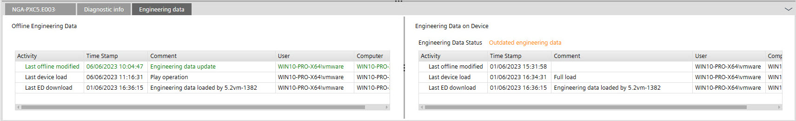

使用 play/pause 函数
play/pause 函数可用于执行增量下载。

建议在使用 play/pause 函数之前执行完整下载。当创建 Modbus 网络或必须续订 BACnet/SC 证书时，特别建议事先进行完整下载。
设备配置的属性不会通过 play/pause 函数加载。
Downloading device configurations
Use play/pause function
- The device is configured and assigned.
- Click .
- Online parameter changes are uploaded.
- The changed hardware is downloaded.
- The engineering editor is online.
- An orange frame around the I/O configuration area becomes visible.
- Live status and online Values/Unit of all data points are displayed.
您无法在在线会话中添加新数据点。
- Check and fix wrongly displayed values in data points.
- The Live status is updated as soon as the values are correct.
- Change the Commissioning state of the data points tested to passed.
- Click when all changes are made.
- The engineering editor is offline.
- The changes done in play mode are written in the device and in the offline data.
- Verify that the changes you made are reflected offline.
- Click again.
- Commissioning status entered in the last session is saved and visible.
使用 play/pause 函数时，设备上工程数据的状态设置为Outdated engineering data。因此必须下载工程数据。
